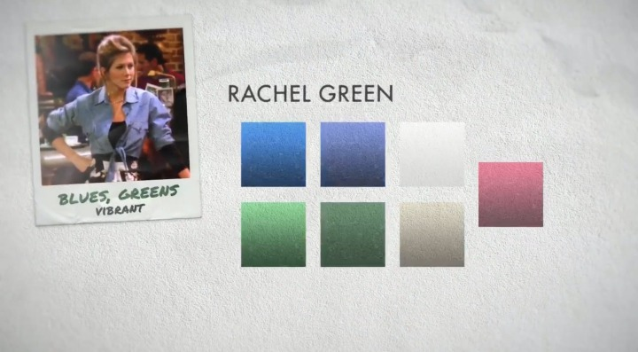

A fashion enthusiast and Monica Geller's best friend from childhood. Rachel first moves in with Monica in season one after nearly marrying Barry Farber. Rachel and Ross Geller are later involved in an on-again, off-again relationship throughout the series.
Rachel's first job is as a waitress at the coffee house Central Perk, but she later becomes an assistant buyer at Bloomingdale's in season three, and a buyer at Ralph Lauren in season five.
